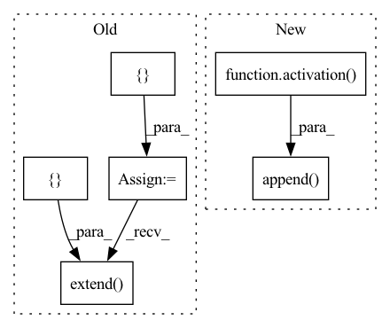

Pattern ID :4465

Before Change
dnn_neurons=512,
):
blocks = []
for block_index in range(cnn_blocks):
if not using_2d_pooling:
pooling = sb.nnet.Pooling1d(
pool_type="max",
kernel_size=inter_layer_pooling_size,
pool_axis=2,
)
else:
pooling = sb.nnet.Pooling2d(
pool_type="max",
kernel_size=(
inter_layer_pooling_size,
inter_layer_pooling_size,
),
pool_axis=(1, 2),
)
blocks.extend(
[
sb.nnet.Conv2d(
out_channels=cnn_channels[block_index],
kernel_size=cnn_kernelsize,
),
sb.nnet.LayerNorm(),
activation(),
sb.nnet.Conv2d(
out_channels=cnn_channels[block_index],
kernel_size=cnn_kernelsize,
),
sb.nnet.LayerNorm(),
activation(),
// Inter-layer Pooling
pooling,
sb.nnet.Dropout2d(drop_rate=dropout),
]
)
if time_pooling:
blocks.extend(
[
sb.nnet.Pooling1d(
pool_type="max",
kernel_size=time_pooling_size,
pool_axis=1,
),
]
)
if self_attention:
blocks.append(
TransformerEncoder(
num_layers=self_attention_layers,
nhead=self_attention_num_heads,
d_ffn=self_attention_hidden_dim,
),
)
if rnn_layers > 0:
blocks.extend(
[
rnn_class(
hidden_size=rnn_neurons,
num_layers=rnn_layers,
dropout=dropout,
bidirectional=rnn_bidirectional,
re_init=rnn_re_init,
),
]
)
for block_index in range(dnn_blocks):
if dnn_postionalwise:
blocks.extend(
After Change
else:
self.append(sb.nnet.Linear, n_neurons=dnn_neurons, bias=True)
self.append(sb.nnet.BatchNorm1d),
self.append(activation()),
self.append(torch.nn.Dropout(p=dropout))
In pattern: SUPERPATTERN
Frequency: 3
Non-data size: 6
Instances
Fragment ID: 16284936
Project Name: speechbrain/speechbrain
Commit Name: 103f6355cf82a6e4b7b52db443400578e70d0ac8
Time: 2020-08-25
Author: plantinga.peter@protonmail.com
File Name: speechbrain/lobes/models/CRDNN_selfatt.py
M Class Name: CRDNN
N Class Name: CRDNN
M Method Name: __init__(25)
N Method Name: __init__(24)
M Parent Class: sb.nnet.Sequential
N Parent Class: sb.nnet.Sequential
M File Name: speechbrain/lobes/models/CRDNN_selfatt.py
N File Name: speechbrain/lobes/models/CRDNN_selfatt.py
M Start Line: 99
M End Line: 197
N Start Line: 74
N End Line: 175
'>
Before Change
def __init__(
self, activation=torch.nn.LeakyReLU, dnn_blocks=2, dnn_neurons=512,
):
blocks = []
for block_index in range(dnn_blocks):
blocks.extend(
[
sb.nnet.Linear(
n_neurons=dnn_neurons, bias=True, combine_dims=False,
),
activation(),
]
)
super().__init__(*blocks)
After Change
for block_index in range(dnn_blocks):
self.append(sb.nnet.Linear, n_neurons=dnn_neurons, bias=True)
self.append(activation())
'>
Fragment ID: 16284934
Project Name: speechbrain/speechbrain
Commit Name: 103f6355cf82a6e4b7b52db443400578e70d0ac8
Time: 2020-08-25
Author: plantinga.peter@protonmail.com
File Name: speechbrain/lobes/models/VanillaNN.py
M Class Name: VanillaNN
N Class Name: VanillaNN
M Method Name: __init__(5)
N Method Name: __init__(4)
M Parent Class: sb.nnet.Sequential
N Parent Class: sb.nnet.Sequential
M File Name: speechbrain/lobes/models/VanillaNN.py
N File Name: speechbrain/lobes/models/VanillaNN.py
M Start Line: 34
M End Line: 45
N Start Line: 33
N End Line: 42
'>
Before Change
lin_neurons=512,
):
blocks = []
// TDNN layers
for block_index in range(tdnn_blocks):
blocks.extend(
[
lambda input_shape: sb.nnet.Conv1d(
input_shape=input_shape,
out_channels=tdnn_channels[block_index],
kernel_size=tdnn_kernel_sizes[block_index],
dilation=tdnn_dilations[block_index],
),
activation(),
sb.nnet.BatchNorm1d,
]
)
// Statistical pooling
blocks.append(sb.nnet.StatisticsPooling())
After Change
kernel_size=tdnn_kernel_sizes[block_index],
dilation=tdnn_dilations[block_index],
)
self.append(activation())
self.append(sb.nnet.BatchNorm1d)
// Statistical pooling
self.append(sb.nnet.StatisticsPooling())
'>
Fragment ID: 16284935
Project Name: speechbrain/speechbrain
Commit Name: 103f6355cf82a6e4b7b52db443400578e70d0ac8
Time: 2020-08-25
Author: plantinga.peter@protonmail.com
File Name: speechbrain/lobes/models/Xvector.py
M Class Name: Xvector
N Class Name: Xvector
M Method Name: __init__(8)
N Method Name: __init__(8)
M Parent Class: sb.nnet.Sequential
N Parent Class: sb.nnet.Sequential
M File Name: speechbrain/lobes/models/Xvector.py
N File Name: speechbrain/lobes/models/Xvector.py
M Start Line: 53
M End Line: 83
N Start Line: 52
N End Line: 69